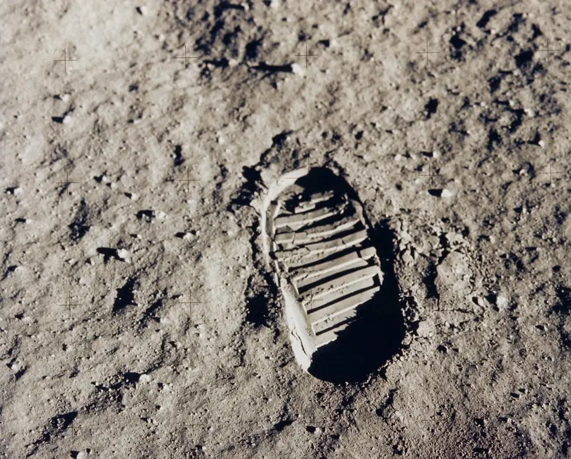

By the mid-1950s, the U.S.-Soviet Cold War had worked its way into the fabric of everyday life in both countries, fueled by the arms race and the growing threat of nuclear weapons, wide-ranging espionage and counter-espionage between the two countries, war in Korea and a clash of words and ideas carried out in the media. These tensions would continue throughout the space race, exacerbated by such events as the construction of the Berlin Wall in 1961, the Cuban missile crisis of 1962 and the outbreak of war in Southeast Asia.
Space exploration served as another dramatic arena for Cold War competition. On October 4, 1957, a Soviet R-7 intercontinental ballistic missile launched Sputnik (Russian for “traveler”), the world’s first artificial satellite and the first man-made object to be placed into the Earth’s orbit. Sputnik’s launch came as a surprise, and not a pleasant one, to most Americans. In the United States, space was seen as the next frontier, a logical extension of the grand American tradition of exploration, and it was crucial not to lose too much ground to the Soviets. In addition, this demonstration of the overwhelming power of the R-7 missile–seemingly capable of delivering a nuclear warhead into U.S. air space–made gathering intelligence about Soviet military activities particularly urgent.
Did you know? After Apollo 11 landed on the moon's surface in July 1969, six more Apollo missions followed by the end of 1972. Arguably the most famous was Apollo 13, whose crew managed to survive an explosion of the oxygen tank in their spacecraft's service module on the way to the moon.

This is an image of Buzz Aldrin's bootprint from the Apollo 11 mission in 1969, one of the first steps taken on the Moon.In 1958, the United States launched its own satellite, Explorer I, designed by the U.S. Army under the direction of rocket scientist Wernher von Braun. That same year, President Dwight D. Eisenhower signed a public order creating the National Aeronautics and Space Administration (NASA), a federal agency dedicated to space exploration.
Eisenhower also created two national security-oriented space programs that would operate simultaneously with NASA’s program. The first, spearheaded by the U.S. Air Force, dedicated itself to exploiting the military potential of space. The second, led by the Central Intelligence Agency (CIA), the Air Force and a new organization called the National Reconnaissance Office (the existence of which was kept classified until the early 1990s) was code-named Corona; it would use orbiting satellites to gather intelligence on the Soviet Union and its allies.
In 1959, the Soviet space program took another step forward with the launch of Luna 2, the first space probe to hit the moon. In April 1961, the Soviet cosmonaut Yuri Gagarin became the first person to orbit Earth, traveling in the capsule-like spacecraft Vostok 1. For the U.S. effort to send a man into space, dubbed Project Mercury, NASA engineers designed a smaller, cone-shaped capsule far lighter than Vostok; they tested the craft with chimpanzees and held a final test flight in March 1961 before the Soviets were able to pull ahead with Gagarin’s launch. On May 5, astronaut Alan Shepard became the first American in space (though not in orbit).
Later that May, President John F. Kennedy made the bold, public claim that the U.S. would land a man on the moon before the end of the decade. In February 1962, John Glenn became the first American to orbit Earth, and by the end of that year, the foundations of NASA’s lunar landing program–dubbed Project Apollo–were in place.
From 1961 to 1964, NASA’s budget was increased almost 500 percent, and the lunar landing program eventually involved some 34,000 NASA employees and 375,000 employees of industrial and university contractors. Apollo suffered a setback in January 1967, when three astronauts were killed after their spacecraft caught fire during a launch simulation. Meanwhile, the Soviet Union’s lunar landing program proceeded tentatively, partly due to internal debate over its necessity and to the untimely death (in January 1966) of Sergey Korolyov, chief engineer of the Soviet space program.
December 1968 saw the launch of Apollo 8, the first manned space mission to orbit the moon, from NASA’s massive launch facility on Merritt Island, near Cape Canaveral, Florida. On July 16, 1969, U.S. astronauts Neil Armstrong, Edwin “Buzz” Aldrin and Michael Collins set off on the Apollo 11 space mission, the first lunar landing attempt. After landing successfully on July 20, Armstrong became the first man to walk on the moon’s surface; he famously called the moment “one small step for man, one giant leap for mankind.”
By landing on the moon, the United States effectively “won” the space race that had begun with Sputnik’s launch in 1957. For their part, the Soviets made four failed attempts to launch a lunar landing craft between 1969 and 1972, including a spectacular launch-pad explosion in July 1969. From beginning to end, the American public’s attention was captivated by the space race, and the various developments by the Soviet and U.S. space programs were heavily covered in the national media. This frenzy of interest was further encouraged by the new medium of television. Astronauts came to be seen as the ultimate American heroes, and earth-bound men and women seemed to enjoy living vicariously through them. Soviets, in turn, were pictured as the ultimate villains, with their massive, relentless efforts to surpass America and prove the power of the communist system.
With the conclusion of the space race, U.S. government interest in lunar missions waned after the early 1970s. In 1975, the joint Apollo-Soyuz mission sent three U.S. astronauts into space aboard an Apollo spacecraft that docked in orbit with a Soviet-made Soyuz vehicle. When the commanders of the two crafts officially greeted each other, their “handshake in space” served to symbolize the gradual improvement of U.S.-Soviet relations in the late Cold War era.